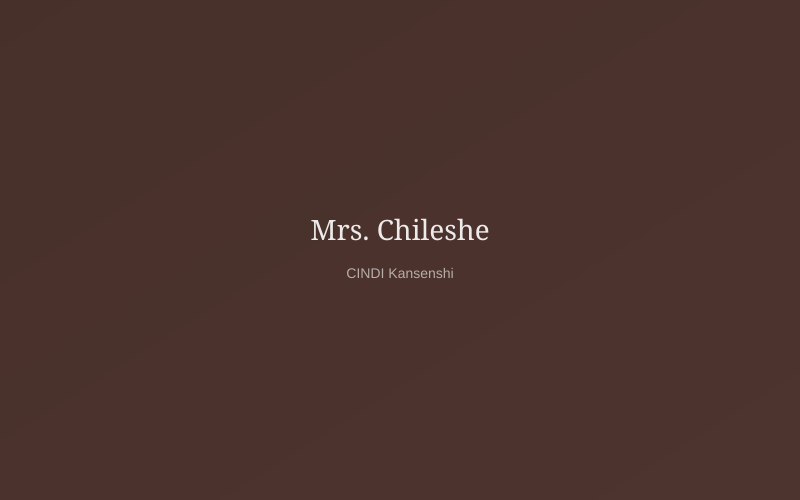
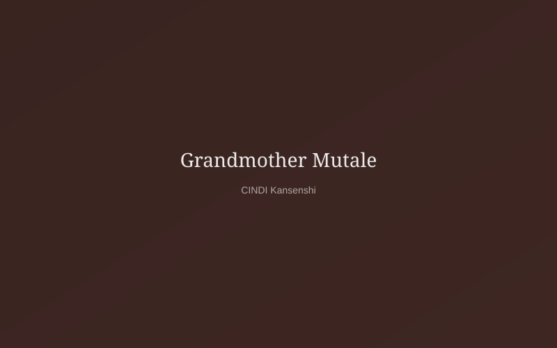
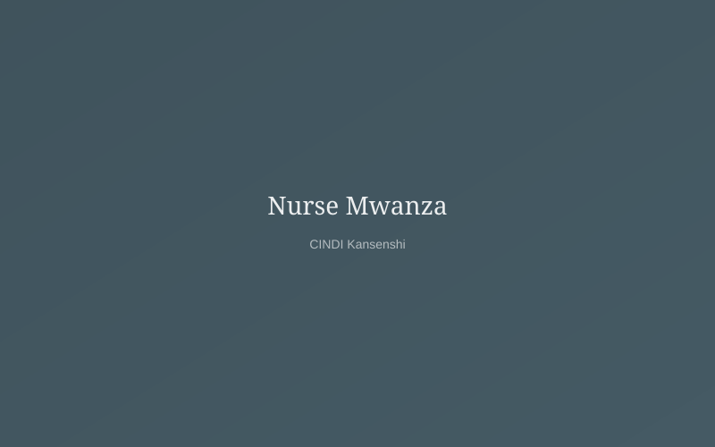

Twelve years of work, thousands of lives changed — here is the evidence of what community-driven care can achieve.
A small group of 8 community volunteers begin feeding 40 children every Saturday in Kansenshi compound.
Officially registered as a Community Based Organisation. A donated classroom becomes our first permanent home, serving 120 children.
First cohort of 80 children receive school fees, uniforms, and books. School enrolment rate in our catchment area rises by 22%.
Partnership with Ndola Teaching Hospital brings the first mobile clinic to Kansenshi. Over 200 children receive free check-ups in year one.
Launched Village Savings & Loan Associations and skills training for 150 caregivers. Average household income among participants rises 35%.
CINDI crosses 1,000 active beneficiaries for the first time. Community garden produces over 2 tonnes of vegetables for the feeding programme.
Four fully-staffed programmes, an 85% school completion rate, and plans to expand the centre with a new library and computer lab.
We are committed to keeping administrative overhead below 8% of total expenditure. The remaining 92%+ goes directly into programmes that benefit children and caregivers.
Download Annual Report"The school fees CINDI paid meant my granddaughter didn't miss a single day of Grade 7. She passed with merit."

"I am 71 years old and I have my own business. I sell soap at the market and I have savings. I never thought this was possible for me."

"I checked a child's haemoglobin level at the clinic — it was critically low. We caught it in time. Without that outreach, we would never have known."

Every donation adds to these statistics — and behind each number is a real child.
Donate Today